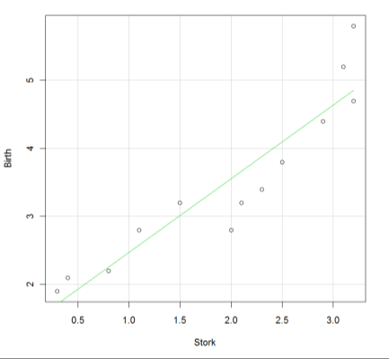
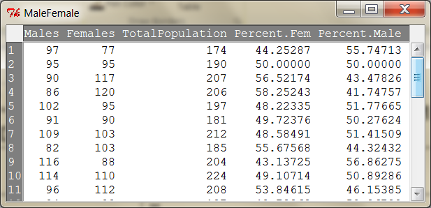
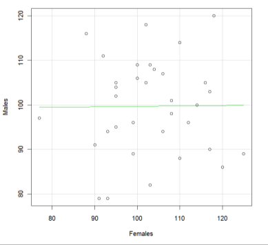
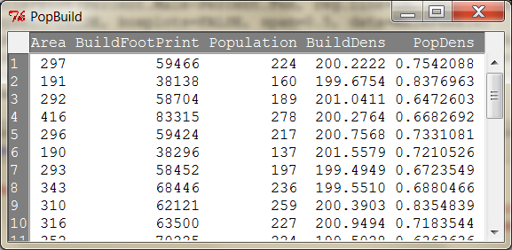
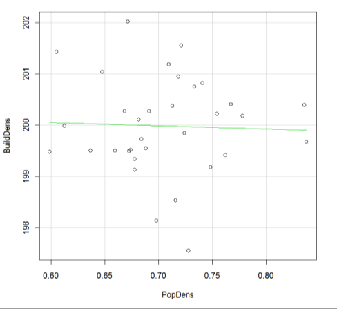
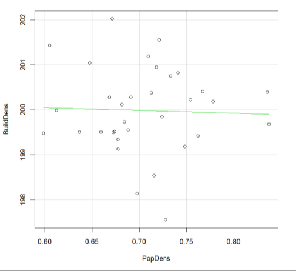
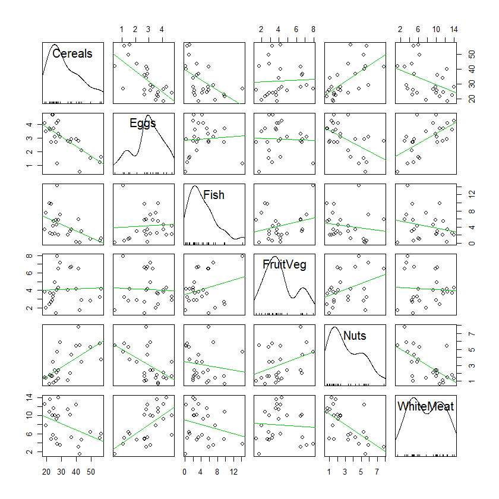
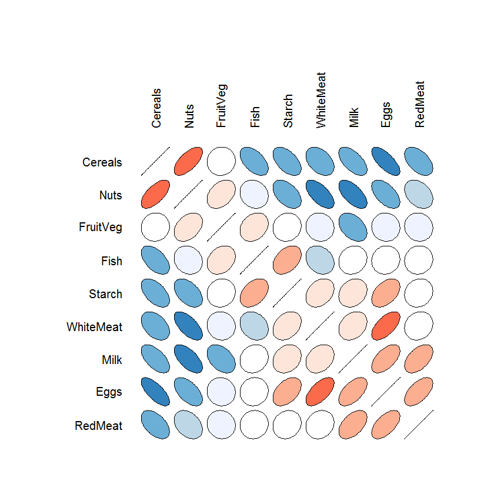

Chapter 04: Bivariate Relationships
1 Causality and Lack Thereof
- A clear temporal precedence of the cause before the effect is necessary for a causal relationship:
\[effect_t \leftarrow cause_{t-1}\]
- The role of the dependent variable and the independent variable may switch depending on the perspective. E.g., the parent’s income influences the children’s education, but also a person’s education level influences her/his income potential:
\[income \leftarrow education \quad \text{or} \quad education \leftarrow income\]
Note: the parent’s income precedes the child’s education and a person’s education precedes her/his income potential.
- Correlation may be caused by plain random coincidences. Statistical significance tests will help quantify the potential impact of these random effects.
\[effect \xleftarrow{random} cause\]
- A lurking third variable, jointly influencing the two variables under investigation, may induce a relationship. This is known as spurious correlation or confounding effect.
\[\begin{array}{c} effect \leftarrow cause \\ \nwarrow \quad \nearrow \\ confounding\ variable \end{array}\]
2 Covariation Relationships
This lecture discusses bivariate covariation between pairs of variables. In contrast, regression analysis assumes a directed cause-effect relationship.
The focus of bivariate analysis is to explore how values taken by one variable co-vary with values taken by another variable.
Relationships are not directed, thus, one cannot say \(X_1\) influences \(X_2\), i.e., \(X_1 \rightarrow X_2\) or vice versa \(X_1 \leftarrow X_2\). Both variables are just mutually co-vary, i.e., \(X_1 \leftrightarrow X_2\)
These bivariate co-variations can be explored:
- For nominal and ordinal scaled variables by nested bar charts (recall the spinogram) and quantified in contingency tables
- For quantitative variables we can scatterplot both variables and quantify their linear relationship with the Pearson correlation coefficient and non-linear but monotonic relationships by the Spearman rank correlation coefficient
- For mixed qualitative and quantitative variables, the co-variation of a quantitative variable can be investigated by stratifying it by the qualitative variable. Conditional statistics and distributions by the categories of the qualitative variable (recall the mean bar plot and parallel box-plots) are used to evaluate possible relationships.
Def. Statistical Dependence: When the probability of a variable taking a particular value is influenced by a given value of another variable, then these two variables are statistically dependent.
3 Correlation Analysis
- Correlation between two metric variables measures their linear relationship:
- Positive linear relationship means that as variable \(X_1\) increases so does the variable \(X_2\)
- Negative linear relationship means that as \(X_1\) increases variable \(X_2\) does decrease
- Zero correlation means that there is no systematic linear relationship between both variables
- This bivariate relationship must hold over the full support of \(X_1\) and \(X_2\), i.e., it cannot be piecewise for specific subsets of intervals
Unless, however, a qualitative variable allows stratifying the relationship for subgroups of observation pairs.
- The relationship between two metric variables is best displayed in a scatterplot. This is also an important exploratory tool

4 Meaningfulness of the Correlation Coefficient
- A statistical relationship per se does not need to be meaningful.
4.1 Example: Confounding Variable
Birth rates and the density of storks in a rural German province over several decades in the last century:

4.1.1 Birth Rate Analysis
 

Both the stork density and the birth rate vary over time (i.e., decades). With time industrialization increases, this reduces the marshy habitat of storks, and it changes the reproductive behavior of the now increasingly urban population.
4.2 Example: Induced Correlation
  
Left: Absolute Population Counts by Sex | Right: %Males by %Females
4.3 Example: Spurious Correlation
The variable “Size of Area” induces correlation. Normalization by the size of the area corrects for the absolute size effects.
  

Left: Absolute numbers | Right: Relative Density Numbers
4.4 Example: Aggregation Effects
Correlation of individual observations (e.g., individuals living within regions) visualized by dots versus correlation of aggregated observations (e.g., averaged individual data in regions) visualized by squares. => This is known as the modifiable areal unit problem (MAUP)

Individual Correlation: 0.457 vs Aggregate Correlation: 0.822
5 Structure of Pearson’s Product-Moment Correlation Coefficient
5.1 Covariance
Empirically the joint variation between two variables is expressed by their measure of covariance:
\[s_{x_1, x_2} = \frac{\sum_{i=1}^{n} (x_{i1} - \bar{x}_1) \cdot (x_{i2} - \bar{x}_2)}{n - 1}\]
Note that the denominator remains \((n - 1)\).
5.2 Geometric Interpretation
Point pairs \([x_1, x_2]\) in quadrant defined by their variation \([(x_{i1} - \bar{x}_1), (x_{i2} - \bar{x}_2)]\) around their means \(\bar{x}_1\) and \(\bar{x}_2\)

5.3 Standardization to Correlation Coefficient
The covariance is not standardized to a comparable value range. It, therefore, becomes difficult to compare the covariance for different pairs of variables. This is because the scale of its parent variables \(X_1\) and \(X_2\) may differ.
For these reasons the covariance is standardized by the standard deviations \(s_{x_1}\) and \(s_{x_2}\) of its parent variables.
This gives the correlation coefficient:
\[r = \frac{s_{x_1, x_2}}{s_{x_1} \cdot s_{x_2}} = \frac{\sum_{i=1}^{n} (x_{i1} - \bar{x}_1) \cdot (x_{i2} - \bar{x}_2)}{\sqrt{\sum_{i=1}^{n} (x_{i1} - \bar{x}_1)^2 \cdot \sum_{i=1}^{n} (x_{i2} - \bar{x}_2)^2}}\]
5.3.1 Notes
The value range of the correlation coefficient is restricted within the interval \(r \in [-1, 1]\). Negative values measure a negative linear relationship in the data cloud, a value of zero implies no linear relationship and positive value implies a positive linear relationship.
The denominator \(n - 1\) in the covariance and both standard deviations denominators cancel out.
BBR give an equivalent computational equation on p 168. One is definitional and the other is computational.
6 The Spearman’s Rank Correlation Coefficient
The distribution of a variable does not need to be symmetric or without outliers. Ranks are not affected by skewness or outliers.
Replacing the observational values of each variable by their associated ranks and then calculating the correlation between these ranks leads to the Spearman’s rank correlation coefficient.
Spearman’s rank correlation coefficient is robust against skewness and outliers.
It measures monotonically increasing or decreasing relationships, which do not necessarily need to follow a straight line. However, it cannot measure complex non-linear relationships properly.
7 Scatterplot Matrix
There is a priori no reason to believe that the protein consumption of different food groups in 25 European countries before the fall of the iron curtain exhibits directional influence.

 
8 Modifiable Areal Unit Problem
In spatial analysis the aggregation bias becomes equivalent to scaling effect in modifiable areal unit studies (MAUP); whereas the specification bias becomes equivalent to the zoning effect.
See Waller and Gotway, 2004. Applied Spatial Statistics for Public Health. Wiley. pp 104-108


FIG. 4.23 Aggregation and zoning issues in the modifiable areal unit problem. [Adapted from Wong (1996).]
FIG. 4.22 Impact of aggregation of spatial data. The top number in each cell of configurations B–F is the aggregated value of X obtained by averaging the original values comprising the larger cell; the lower number is the corresponding aggregated value of Y. Areal weighting follows formulas in Robinson (1956).
8.0.1 MAUP Statistics Table
| Configuration | \(\bar{X}\) | \(\bar{Y}\) | \(s_X^2\) | \(s_Y^2\) | \(r_{XY}\) | \(\bar{X}\) | \(\bar{Y}\) | \(s_X^2\) | \(s_Y^2\) | \(r_{XY}\) |
|---|---|---|---|---|---|---|---|---|---|---|
| Unweighted | Weighted | |||||||||
| A | 3.88 | 3.44 | 2.36 | 2.37 | 0.66 | 3.88 | 3.44 | 2.36 | 2.37 | 0.66 |
| B | 3.88 | 3.44 | 0.30 | 0.40 | 0.88 | 3.88 | 3.44 | 0.30 | 0.40 | 0.88 |
| C | 3.88 | 3.44 | 0.14 | 0.26 | 0.94 | 3.88 | 3.44 | 0.14 | 0.26 | 0.94 |
| D | 3.88 | 3.44 | 1.55 | 1.34 | 0.95 | 3.88 | 3.44 | 1.55 | 1.34 | 0.95 |
| E | 3.88 | 3.44 | 1.17 | 0.98 | 0.98 | 3.88 | 3.44 | 1.17 | 0.98 | 0.98 |
| F | 4.06 | 3.36 | 0.16 | 0.93 | 0.64 | 3.88 | 3.44 | 0.18 | 0.48 | 0.80 |
9 Ecological Fallacy
See Ecological fallacy (youtube.com)
10 Confounding
Source: Kaplan, Daniel T, 2009. Statistical Modeling. A Fresh Approach. Self-published. p 151f
According to a nautical tale, a new research assistant was asked to explore for the U.S. Coast Guard whether life vests are saving lives?
The research assistant randomly sampled 500 records of man-over-board accidents on large vessels with the following result:
10.1 Rescue × Vest Crosstabulation (Overall)
| Rescue | Wearing Vest | No Vest | Total |
|---|---|---|---|
| Survived | Count: 100 | Count: 71 | 171 |
| % within Vest: 25.0% | % within Vest: 71.0% | 34.2% | |
| Drowned | Count: 300 | Count: 29 | 329 |
| % within Vest: 75.0% | % within Vest: 29.0% | 65.8% | |
| Total | 400 | 100 | 500 |
| 100.0% | 100.0% | 100.0% |
Conclusions: Apparently wearing a vest is increasing the likelihood of drowning.
The supervisor felt extremely uncomfortable with these findings and asked the research assistant to investigate if weather conditions may influence the survival chances.
The partial results broken down by the weather conditions tell a totally different story, more in tune with common sense:
10.2 Rescue × Vest × Weather Crosstabulation
10.2.1 Fair Weather
| Rescue | Wearing Vest | No Vest | Total |
|---|---|---|---|
| Survived | Count: 19 | Count: 70 | 89 |
| % within Vest: 95.0% | % within Vest: 87.5% | 89.0% | |
| Drowned | Count: 1 | Count: 10 | 11 |
| % within Vest: 5.0% | % within Vest: 12.5% | 11.0% | |
| Total | 20 | 80 | 100 |
10.2.2 Foul Weather
| Rescue | Wearing Vest | No Vest | Total |
|---|---|---|---|
| Survived | Count: 81 | Count: 1 | 82 |
| % within Vest: 21.3% | % within Vest: 5.0% | 20.5% | |
| Drowned | Count: 299 | Count: 19 | 318 |
| % within Vest: 78.7% | % within Vest: 95.0% | 79.5% | |
| Total | 380 | 20 | 400 |
Conclusions: Under both weather conditions wearing a vest increases the likelihood of survival.
10.3 Explanation
In foul weather, sailors have the habit of putting their life vests on, whereas in fair weather they mostly do not bother doing so.
Furthermore, falling overboard in foul weather diminishes the likelihood of survival irrespectively of wearing a vest or not (see red numbers).
Apparently, the weather conditions are correlated with the status of wearing a vest and, therefore, the survival likelihood.
11 Summary
| Concept | Description |
|---|---|
| Causality | Requires temporal precedence; correlation ≠ causation |
| Covariance | \(s_{x_1,x_2} = \frac{\sum(x_{i1}-\bar{x}_1)(x_{i2}-\bar{x}_2)}{n-1}\) |
| Pearson’s r | Standardized covariance; range \([-1, 1]\) |
| Spearman’s ρ | Rank-based; robust to outliers and skewness |
| Confounding | Third variable creates spurious correlation |
| MAUP | Aggregation and zoning effects in spatial data |
| Ecological Fallacy | Inferring individual behavior from aggregate data |